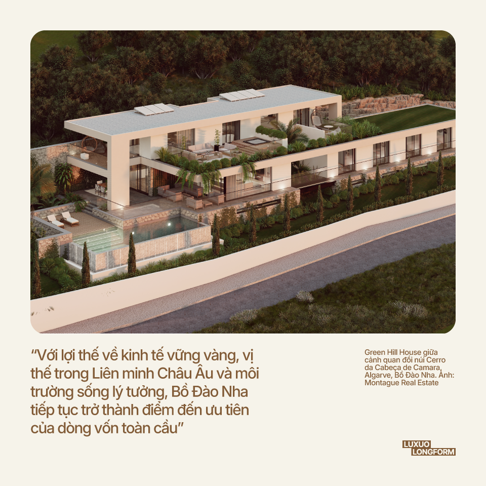
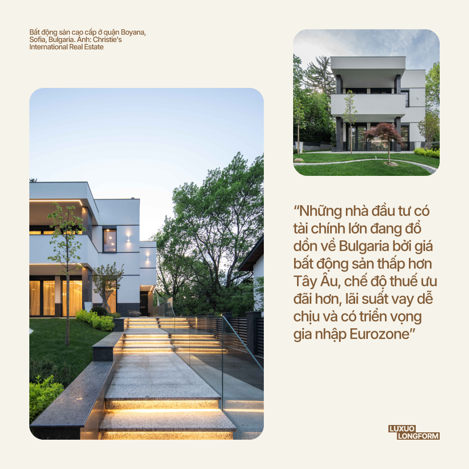
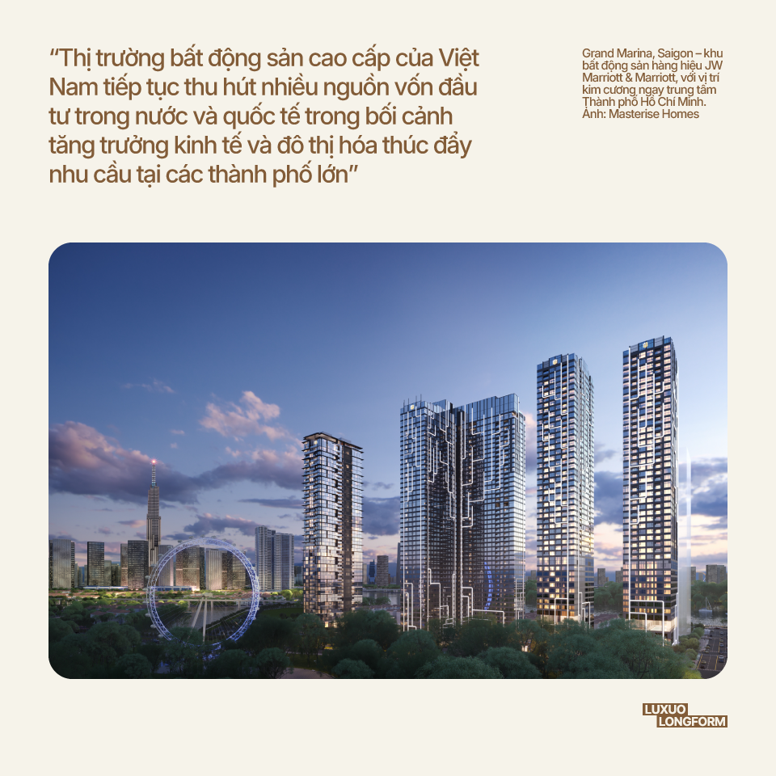
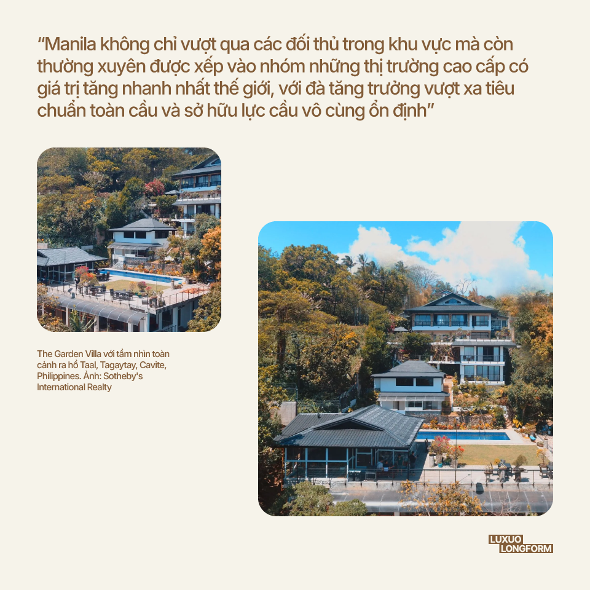
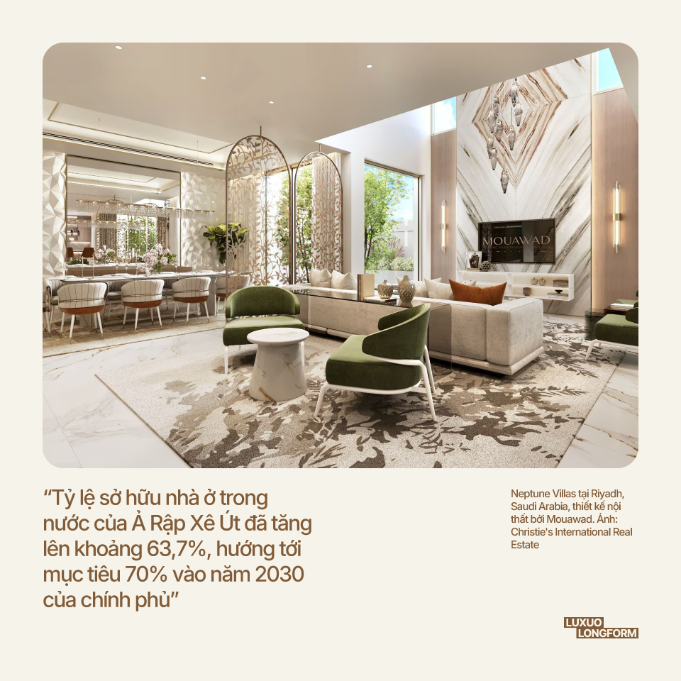
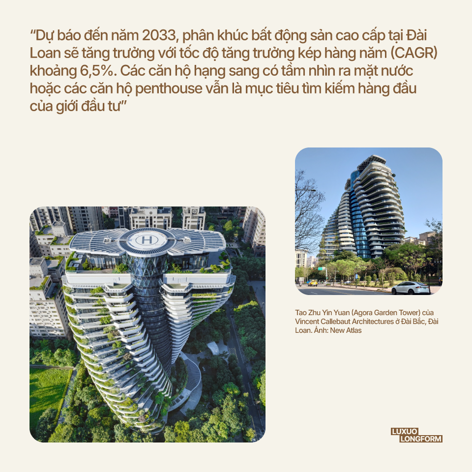
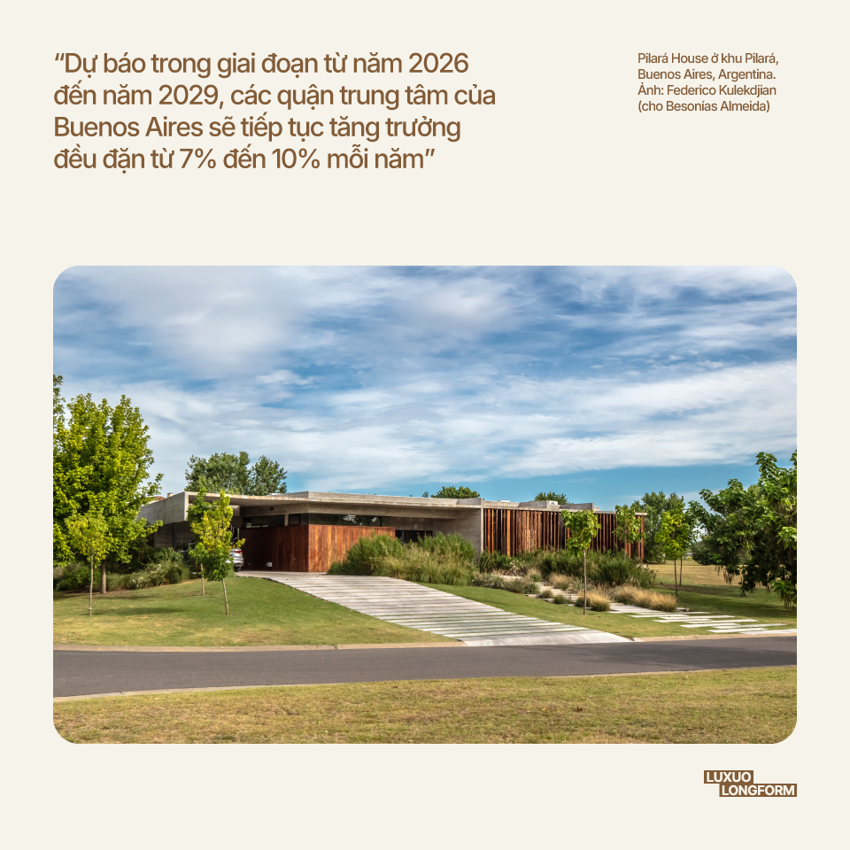
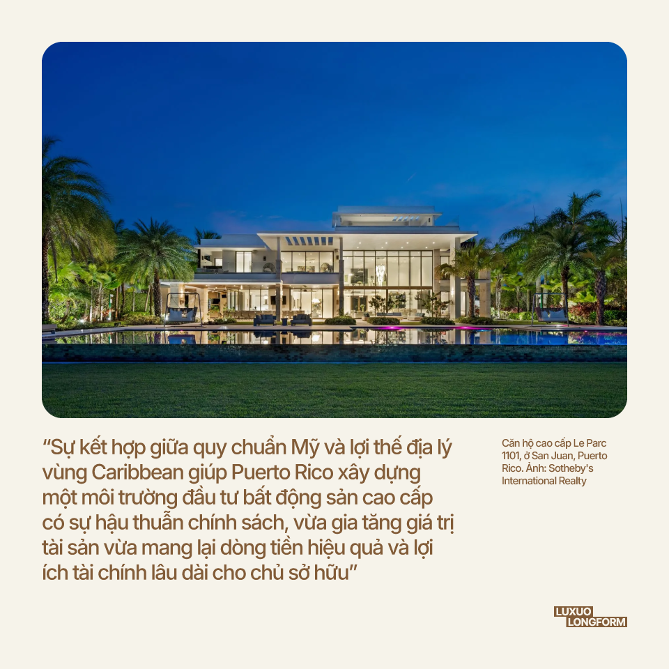

Bất động sản cao cấp trên khắp quốc tế dự kiến sẽ mở rộng quy mô ra ngoài những thành phố lớn như New York, London hay Miami vào năm 2026, trong bối cảnh các nhà đầu tư đang tìm kiếm giá trị, sự tăng trưởng cùng khả năng phân bổ rủi ro. Đối với những người đang quan tâm đến các thị trường có phong cách sống ổn định tại Mỹ và các điểm đến mới nổi trên toàn cầu, việc hợp tác với một chuyên gia bất động sản cao cấp tại Naples có thể mang lại những hiểu biết quý giá về các cơ hội nhà ở ven biển hạng sang đầy tiềm năng.
Trong năm 2025 vừa qua, bất động sản cao cấp tại Bồ Đào Nha đã cho thấy kết quả vượt trội so với nhiều quốc gia khác ở khu vực Tây Âu. Theo bảng xếp hạng của Knight Frank, Lisbon đã góp mặt trong danh sách 10 thành phố có giá bất động sản cao cấp tăng trưởng hàng đầu thế giới. Mức tăng 5,3% mỗi năm giúp thủ đô của Bồ Đào Nha vượt xa các thành phố lớn như Paris, London hay New York. Các chuyên gia từ Savills nhận định giá nhà tại đây sẽ tiếp tục tăng thêm từ 4% đến 6% trong năm 2025 sau khi đã đạt mức tăng 6% vào năm ngoái.
Đầu năm 2025, giá bất động sản trên cả nước của Bồ Đào Nha tăng 15,2% so với cùng kỳ, cao nhất trong Liên minh Châu Âu và vượt xa mức trung bình khoảng 5% của khu vực châu Âu. Tại thị trường cao cấp Algarve, tổng giá trị giao dịch phân khúc bất động sản cao cấp vượt 75 triệu Euro, với mức giá trung bình mỗi căn biệt thự gần 5 triệu Euro, và những bất động sản cao cấp hơn sẽ sở hữu mức giá vượt xa mức này.

Bên cạnh đó, thị trường bất động sản cao cấp cũng đang chứng kiến sự thay đổi trong cơ cấu nhà đầu tư. Theo thống kê của Portugal Sotheby’s International, doanh thu tăng 31% và số lượng giao dịch tăng 34% so với năm 2024. Kết quả này đến từ nhu cầu ngày càng lớn của khách hàng đến từ Bắc Mỹ, Brazil và Vương quốc Anh cùng với giá trị trung bình trên mỗi giao dịch tăng mạnh.
Ngoài ra, khách hàng nội địa vẫn đóng vai trò quan trọng khi đóng góp hơn một nửa số lượng giao dịch trong năm 2025. Trong khi đó, dòng vốn nước ngoài tập trung nhiều vào phân khúc bất động sản hàng hiệu và biệt thự ven biển cao cấp. Tại các tâm điểm như Lisbon hay Algarve, giá nhà trung bình ở khu vực trung tâm đã vượt ngưỡng 6.100 Euro mỗi mét vuông. Do nguồn cung hạn chế nên sự cạnh tranh để sở hữu ngày một lớn. Với lợi thế về kinh tế vững vàng, vị thế trong Liên minh Châu Âu và môi trường sống lý tưởng, Bồ Đào Nha tiếp tục trở thành điểm đến ưu tiên của dòng vốn toàn cầu.
Thị trường bất động sản cao cấp tại Sofia và các khu nghỉ dưỡng tại Bulgaria đang thu hút sự chú ý ngày càng lớn từ giới đầu tư, đồng thời trở thành điểm đến có giá trị đầu tư tốt nhất trong Liên minh Châu Âu. Theo báo cáo từ Christie’s International Real Estate năm 2025, doanh số phân khúc bất động sản trên 600.000 Euro tăng trưởng tới 50% chỉ trong một năm. Trong đó có 15% thương vụ chốt ở mức giá cao hơn mong đợi của người bán, cho thấy sự quyết tâm rất lớn từ các nhà đầu tư ở phân khúc này.
Trong giai đoạn từ cuối năm 2023 đến năm 2024, giá nhà trung bình tại Bulgaria tăng 7,1%, trở thành mức tăng cao nhất trong Liên minh Châu Âu. Dự kiến con số này sẽ tiếp tục “nhảy vọt” khoảng 15% vào năm 2025. Tại các khu vực cao cấp ở Sofia, mức giá phổ biến rơi vào khoảng 3.500 Euro cho mỗi mét vuông, trong đó những vị trí đắc địa nhất còn vượt mức này.

Tính đến cuối năm 2025, giá nhà ở tại Sofia chạm mức 2.310 Euro một mét vuông, tăng 25,5% hàng năm. Sự tăng trưởng này bắt nguồn từ nguồn cung mới khan hiếm và giá bán cao kỷ lục tại các vị trí đắc địa. Trong vòng 5 năm, giá trị các bất động sản ven biển đã tăng gần gấp đôi, trong khi các căn hộ cao cấp tại thành phố tăng từ 60% đến 70%. Những nhà đầu tư có tài chính lớn đang đổ dồn về Bulgaria bởi giá bất động sản thấp hơn Tây Âu, chế độ thuế ưu đãi hơn, lãi suất vay dễ chịu và có triển vọng gia nhập Eurozone. Đây là những yếu tố quan trọng giúp thu hẹp khoảng cách về giá trị bất động sản giữa Bulgaria và các thị trường lớn ở phương Tây.
Ngoài các quận trung tâm của Sofia như Lozenets, Iztok hay Izgrev, giới tài phiệt còn đặc biệt quan tâm đến Varna và Burgas. Những địa danh ven biển này không chỉ giúp các nhà đầu tư có lợi thế về giá cả mà còn mang lại lợi nhuận từ việc cho thuê và đa dạng hóa danh mục đầu tư bởi sức tăng trưởng vô cùng ấn tượng.
Thị trường bất động sản cao cấp của Việt Nam tiếp tục thu hút nhiều nguồn vốn đầu tư trong nước và quốc tế trong bối cảnh tăng trưởng kinh tế và đô thị hóa thúc đẩy nhu cầu tại các thành phố lớn. Giá căn hộ cao cấp tại Thành phố Hồ Chí Minh và Hà Nội hiện dao động từ 5.400 USD đến 15.000 USD/m², tương đương với các thị trường trung tâm trên toàn cầu nhưng thấp hơn Singapore và Bangkok. Mức giá này góp phần duy trì dòng vốn đầu tư ổn định.
Chính sách của Chính phủ đã đơn giản hóa quy định sở hữu đối với người nước ngoài và tạo điều kiện thuận lợi hơn cho các nhà đầu tư. Song song đó, các dự án hạ tầng như tuyến metro và sân bay quốc tế mới đang cải thiện khả năng kết nối, qua đó nâng tầm giá trị bất động sản. Lực lượng chuyên gia quốc tế làm việc cho các tập đoàn đa quốc gia tạo ra nhu cầu tập trung ở phân khúc bất động sản cao cấp, khiến nguồn cung trở nên khan hiếm hơn, củng cố giá thuê và hỗ trợ tăng trưởng vốn bền vững tại cả khu đô thị lẫn khu nghỉ dưỡng.

Trong quý 3/2025, giá của bất động sản cao cấp tại Hà Nội tăng vọt khi căn hộ cao cấp ở các quận trọng điểm vượt ngưỡng 180 triệu đồng (khoảng 6.840 USD/m²), và giá biệt thự hạng sang tại các khu vực trung tâm đạt 395 triệu đồng (khoảng 15.000 USD/m²). Ngoài ra, các căn hộ hàng hiệu và tòa nhà cao cấp tại Thành phố Hồ Chí Minh cũng tăng giá đáng kể, trong đó có những khu vực đạt mức tăng trưởng tới hai chữ số.
Thị trường bất động sản cao cấp của Việt Nam dự kiến đạt hơn 3 tỷ USD trong năm 2025 và gần gấp đôi vào năm 2030, với tốc độ tăng trưởng kép hàng năm (CAGR) từ 13% đến 14% cho đến cuối thập kỷ. Dù chiếm tỷ trọng nhỏ, phân khúc biệt thự và nhà đất thuộc nhóm tăng trưởng nhanh nhất, với mức dự kiến trên 14%.
Sự tham gia của dòng vốn tổ chức và nhà đầu tư nước ngoài tiếp tục củng cố xu hướng này. Tầng lớp tinh hoa tại Việt Nam dự kiến đạt 25.800 người vào năm 2025, góp phần gia tăng nhu cầu đối với các dòng sản phẩm hàng hiệu. Hơn nữa, các khoản đầu tư hạ tầng như tuyến metro mới và mạng lưới giao thông đang cải thiện khả năng tiếp cận các khu vực cao cấp đang phát triển.
Thị trường bất động sản cao cấp tại Manila ở Philippines đang tăng trưởng mạnh mẽ. Theo Prime Worldwide Cities Index của Santos Knight Frank, giá bất động sản cao cấp tại Metro Manila tăng 21,2% trong vòng một năm, vượt qua các trung tâm quốc tế như Dubai (15,9%) và Thượng Hải (10,4%). Báo cáo của Philippines News Agency cũng xếp Manila vào nhóm 5 thành phố có tốc độ tăng giá cao nhất thế giới, với mức tăng 77,5% trong 5 năm qua, cao hơn Los Angeles (56%) và Thượng Hải (32,8%).
Các khu vực trọng điểm như Makati, Bonifacio Global City và Vịnh Manila tiếp tục duy trì mặt bằng giá cao. Một số dự án căn hộ trung tâm được chào bán ở mức trên 1 triệu peso/m² trong những đợt mở bán. Ngoài ra, các yếu tố kinh tế vĩ mô đóng vai trò quan trọng khi giá nhà toàn quốc tăng khoảng 7,5% đến 8%/năm đến đầu năm 2025. Nguồn cung bất động sản cao cấp luôn trong tình trạng khan hiếm do sự săn đón của giới tài phiệt trong nước và những khách hàng nước ngoài sẵn sàng chi trả toàn bộ bằng tiền mặt. Hơn nữa, luật pháp tại đây cho phép nhà đầu tư quốc tế nắm giữ tối đa 40% số lượng căn hộ trong một dự án chung cư.

Trong khi các phân khúc đầu cơ đối mặt với tình trạng dư cung, bất động sản cao cấp vẫn được “săn đón” mạnh mẽ hơn hơn so với phân khúc tầm trung. Giá trị của phân khúc này liên tục thăng hoa nhờ sự khan hiếm của các bất động sản siêu cao cấp và sự thịnh vượng của người dân, cùng các dự án hạ tầng trọng điểm. Manila không chỉ vượt qua các đối thủ trong khu vực mà còn thường xuyên được xếp vào nhóm những thị trường cao cấp có giá trị tăng nhanh nhất thế giới, với đà tăng trưởng vượt xa tiêu chuẩn toàn cầu và sở hữu lực cầu vô cùng ổn định.
Thị trường bất động sản tại Ả Rập Xê Út (Saudi Arabia) đang chuyển mình mạnh mẽ từ một thị trường nội địa thành điểm đến hấp dẫn trên toàn cầu. Trong năm 2025, giá bất động sản tại thủ đô Riyadh đã tăng khoảng 10,6% so với cùng kỳ năm trước và tổng số lượng giao dịch trên toàn quốc chạm ngưỡng hàng triệu lượt. Tại thành phố Jeddah, giá biệt thự và căn hộ tăng từ 2% đến 3% trong nửa đầu năm 2025, những tổng giá trị các thương vụ lại tăng mạnh đến 34%. Điều này cho thấy nhu cầu mua sắm bất động sản không chỉ tập trung ở những khu vực có giá cao tại thủ đô.

Theo số liệu từ Knight Frank, giá căn hộ tại Riyadh đã tăng 75% trong vòng 5 năm qua và giá biệt thự tăng 39%, cho thấy cho khả năng sinh lời bền vững tại các đô thị lớn. Đầu năm 2025, tỷ suất lợi nhuận cho thuê trung bình trên cả nước đạt khoảng 6,75%, riêng Riyadh đạt 8,89% và Jeddah là 7,89%, tương đương các thành phố lớn trên thế giới. Bên cạnh đó, hệ thống sở hữu dành cho người nước ngoài bắt đầu áp dụng từ tháng 1/2026 được xem là một bước ngoặt quan trọng khi cho phép người ngoại quốc mua nhà tại các khu vực quy định sau khi hoàn tất thủ tục đăng ký và đóng phí.
Những điều chỉnh pháp lý này, kết hợp với chương trình Cư trú Cao cấp (Premium Residency), nhằm mục đích tăng dòng vốn quốc tế bằng cách cấp quyền cư trú cho các khoản đầu tư bất động sản trên 4 triệu SAR (khoảng 1,07 triệu USD). Tỷ lệ sở hữu nhà ở trong nước của Ả Rập Xê Út đã tăng lên khoảng 63,7%, hướng tới mục tiêu 70% vào năm 2030 của chính phủ. Tuy nhiên, việc giá nhà tăng cao và các quy định về giá thuê, chẳng hạn như việc đóng băng giá thuê gần đây, đang định hình lại động lực về khả năng chi trả. Thị trường bất động sản của vương quốc đang chuyển mình từ một thị trường nhà ở quốc gia sang một thị trường mở, với giá cả tăng cao, lợi nhuận trên mức trung bình và các cải cách cấu trúc mở rộng điều kiện đầu tư – một câu chuyện quan trọng cho các kế hoạch phân bổ vốn năm 2026.
Trong năm 2025, giá bất động sản tại Đài Loan tăng chậm lại và số lượng giao dịch giảm đáng kể do quy định vay thế chấp được siết chặt và khả năng vay vốn của người mua suy giảm. Trong quý 3/2025, giá nhà tại Đài Nam và Cao Hùng giảm khoảng 2% đến 5% so với cùng kỳ năm trước. Tổng giao dịch trên toàn thị trường giảm 28,1% so với năm 2024, chạm mức thấp nhất kể từ năm 2017. Ở Đài Bắc, tỷ suất lợi nhuận cho thuê trung bình vào giữa năm 2025 chỉ khoảng 2,24%, cho thấy cơ hội sinh lời của dòng tiền cho thuê không còn hấp dẫn.
Tuy nhiên, phân khúc bất động sản cao cấp tại các khu vực sầm uất như quận Đại An vẫn giữ vững sức hút. Những khách hàng thượng lưu sẵn sàng chi trả hoàn toàn bằng tiền mặt, đặc biệt là từ Trung Quốc và các nước trong khu vực, giúp phân khúc này tiếp tục duy trì ngay cả khi chính sách tín dụng thắt chặt kìm hãm các hoạt động đầu cơ.

Dự báo đến năm 2033, phân khúc bất động sản cao cấp tại Đài Loan sẽ tăng trưởng với tốc độ tăng trưởng kép hàng năm (CAGR) khoảng 6,5%. Các căn hộ hạng sang có tầm nhìn ra mặt nước hoặc các căn hộ penthouse vẫn là mục tiêu tìm kiếm hàng đầu của giới đầu tư. Điều này cho thấy tiềm năng to lớn của các vị trí đắc địa tại Đài Bắc và các thành phố lớn so với tình hình chung của cả nước.
Đài Loan được xem là điểm đến lý tưởng để đầu tư một cách thận trọng khi các khu vực cao cấp tại Đài Bắc và một số trung tâm đô thị quốc tế có thể vượt qua xu hướng chung. Sau giai đoạn chu kỳ suy giảm, giá trị bất động sản đang bắt đầu ổn định trở lại. Đây là dấu hiệu cho thấy năm 2026 có thể là thời điểm vàng để những nhà đầu tư có nguồn vốn bền vững và tầm nhìn dài hạn bắt đầu gia nhập thị trường.
Thị trường bất động sản tại Argentina phục hồi mạnh mẽ trong năm 2025 nhờ những thay đổi về tỷ giá và sự hồi phục của nền kinh tế. Tại thủ đô Buenos Aires, giá nhà trung bình toàn thành phố dao động từ 2.268 đến 2.500 USD/m². Riêng những khu vực cao cấp như Puerto Madero, mức giá có thể lên tới từ 5.931 đến 6.500 USD/m². So với cùng kỳ năm trước, lượng giao dịch đã tăng khoảng 39% đến 47%, cho thấy người mua đang quan tâm trở lại sau một thời gian dài thị trường đóng băng.
Tại các khu dân cư trọng điểm, giá nhà tăng khoảng 8% đến 12% mỗi năm. Trong khi đó, các khu vực lân cận khác cũng ghi nhận mức tăng từ 5% đến 9%. Nhờ lãi suất giảm, hoạt động cho vay thế chấp tăng hơn 1.000%, giúp thị trường sôi động hơn và đẩy nhanh tốc độ giao dịch.

Dự báo trong giai đoạn từ năm 2026 đến năm 2029, các quận trung tâm của Buenos Aires sẽ tiếp tục tăng trưởng đều đặn từ 7% đến 10% mỗi năm. Sự tăng trưởng này đến từ việc đồng nội tệ mất giá, tỷ lệ vay thế chấp tăng và sự quan tâm ngày càng lớn của nhà đầu tư nước ngoài muốn tìm kiếm lợi nhuận từ đồng USD. Bất động sản cao cấp tại các khu trung tâm cũng đang mang lại hiệu quả kinh doanh và cho thuê vượt trội. Trong khi đó, các khu vực ngoại ô mới nổi cũng cho thấy tiềm năng tăng giá rất lớn. Tỷ suất sinh lời từ việc cho thuê căn hộ ở những vị trí đắc địa có thể vượt ngưỡng 7% đến 9%. Đây là mức lợi nhuận đặc biệt hấp dẫn và hiếm có thành phố lớn nào trên thế giới có được.
Puerto Rico vận hành thị trường bất động sản theo luật pháp Hoa Kỳ và hưởng lợi từ xu hướng di cư vì chính sách thuế, tạo nên đà tăng giá mạnh trong thời gian gần đây. Trong quý đầu năm 2025, giá nhà tăng 11,6% sau khi đã tăng 22% vào cuối năm 2024, nằm trong nhóm tăng trưởng theo quý cao nhất bên ngoài các khu đô thị trọng điểm của Mỹ. Ngoài ra, các biệt thự nghỉ dưỡng và nhà ở cao cấp ven biển tại Condado, Dorado, Palmas del Mar và Bahía Beach có mức giá cao và có tốc độ giao dịch cực kỳ nhanh chóng, đóng góp vào tổng giá trị thị trường bất động sản của đảo đạt 346 tỷ USD vào năm 2025. Hơn nữa, đà tăng giá bán trung bình trong các chu kỳ gần đây cũng cho thấy cả nhu cầu trong nước lẫn dòng vốn đầu tư từ Mỹ đổ về để tận hưởng cuộc sống chất lượng cũng như ưu đãi thuế.

Chi phí để sở hữu các bất động sản cao cấp tại đây rất phong phú. Một căn biệt thự hướng biển có giá từ 7 triệu USD trở lên, và đã xuất hiện các giao dịch chào bán trên 65 triệu USD. Bên cạnh việc tăng giá tài sản, nhà đầu tư còn thu về lợi nhuận từ 8% đến 12% khi cho thuê ngắn hạn tại các khu du lịch. Tại San Juan, phân khúc cho thuê dài hạn cũng hoạt động rất hiệu quả. Đặc biệt, Đạo luật 60 của Puerto Rico năm 2019 thiết lập một hệ thống ưu đãi thuế toàn diện nhằm thu hút nhà đầu tư và cư dân có tiềm lực tài chính, bao gồm giảm thuế thu nhập và thuế lãi vốn cho đối tượng đủ điều kiện. Sự kết hợp giữa quy chuẩn Mỹ và lợi thế địa lý vùng Caribbean giúp Puerto Rico xây dựng một môi trường đầu tư bất động sản cao cấp có sự hậu thuẫn chính sách, vừa gia tăng giá trị tài sản vừa mang lại dòng tiền hiệu quả và lợi ích tài chính lâu dài cho chủ sở hữu.
Bức tranh bất động sản cao cấp toàn cầu năm 2026 cho thấy dòng vốn đang dịch chuyển mạnh mẽ sang những thị trường có nền tảng kinh tế vững vàng, pháp lý rõ ràng và dư địa tăng trưởng còn rộng mở. Từ Tây Âu, Đông Nam Á đến Trung Đông và khu vực Mỹ Latinh, mỗi quốc gia đều cho thấy sự biến động về giá cả, lợi nhuận cho thuê và sức hút đối với giới đầu tư quốc tế. Trong bối cảnh các thị trường lâu đời dần bão hòa, những thị trường này đang định hình lại bản đồ đầu tư toàn cầu, mở ra cơ hội phân bổ tài sản linh hoạt và chiến lược hơn cho năm 2026 và những năm tiếp theo.